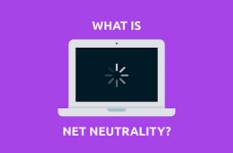

Internet freedom is a term that encompasses digital rights, freedom of information, the right to Internet access, freedom from Internet censorship, and net neutrality. The laws of several countries recognize a right to Internet access. The right to Internet access is the view that all people must be able to access the Internet in order to exercise and enjoy their rights to freedom of expression and opinion and other fundamental human rights, that states have a responsibility to ensure that Internet access is broadly available.

Net neutrality is the principle that Internet service providers (ISPs) must treat all Internet communications equally, and not discriminate or charge differently based on user, content, website, platform or application. Net neutrality allows us to have the choice to visit and experience every legal site or application equally without any discrimination.
Digital rights are those human rights and legal rights that allow individuals to access, use, create, and publish digital media. This also includes the protection of existing rights, such as the right to privacy and freedom of expression. The laws of several countries recognize a right to Internet access.

Free Internet access: The internet is an incredible invention; open source, decentralised, community-led and a source of knowledge, information, and power, it is used by 51% of the world’s population. But at the moment, it comes at a cost. The internet provides infinite levels of knowledge to anyone who seeks it. Internet allows people from all over the world to engage in vibrant online communities, to connect with others from every corner of the world and to communicate with individuals. The internet brings freedom to its users in many ways; it gives people the freedom to learn what they want, to speak with whom they want, to air their opinions